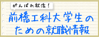

アクセス
お問い合わせ
リンク
サイトマップ
English
文字サイズ
+
標準
キャリアサポート
就職準備に向けて
就職・進学データ
企業採用ご担当者様
キャリアセンタートップ
お知らせ
2023年06月15日
求人票・インターンシップ情報のご提供について
2020年04月21日
【学生の皆さんへ】就職関係の情報はUNIPAで発信中です。
2019年10月01日
【重要】卒業後の進路が決定した学生へ
キャリアサポート
キャリアセンターについて
後橋工科大学生のための就職情報
就職支援サイト
卒業生アンケートのお願い
【重要】就職活動報告書の作成のお願い
【重要】卒業後の進路が決定した学生へ
就職準備に向けて
インターンシップ
推薦書（学長名）
面接
内定
在学生へ ～先輩からのためになる一言～
就職・採用活動開始時期について
OB・OGからのメッセージ
労働法Ｑ＆Ａ
求人票について
求人情報検索システム
【学生の皆さんへ】就職関係の情報はUNIPAで発信中です。
就職・進学データ
主な就職先・大学院進学先
企業採用ご担当者様
各学科の特徴について
アルバイト求人票について
求人票・インターンシップ情報のご提供について
